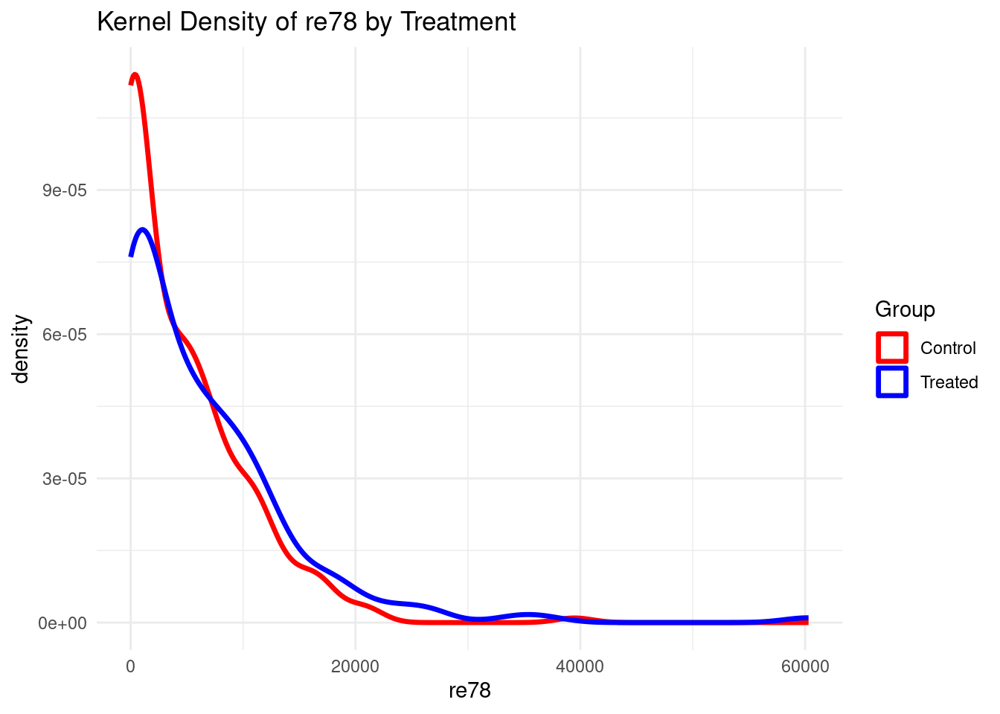
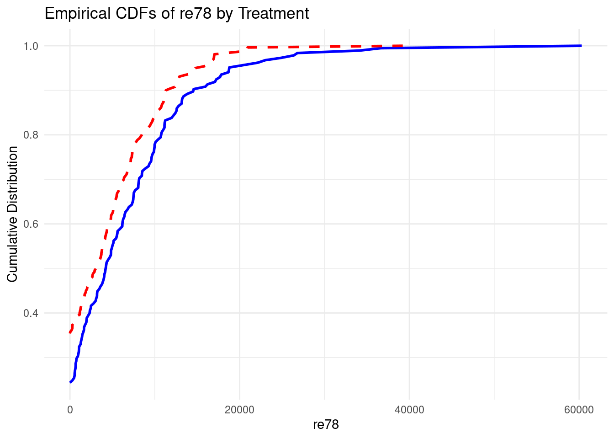
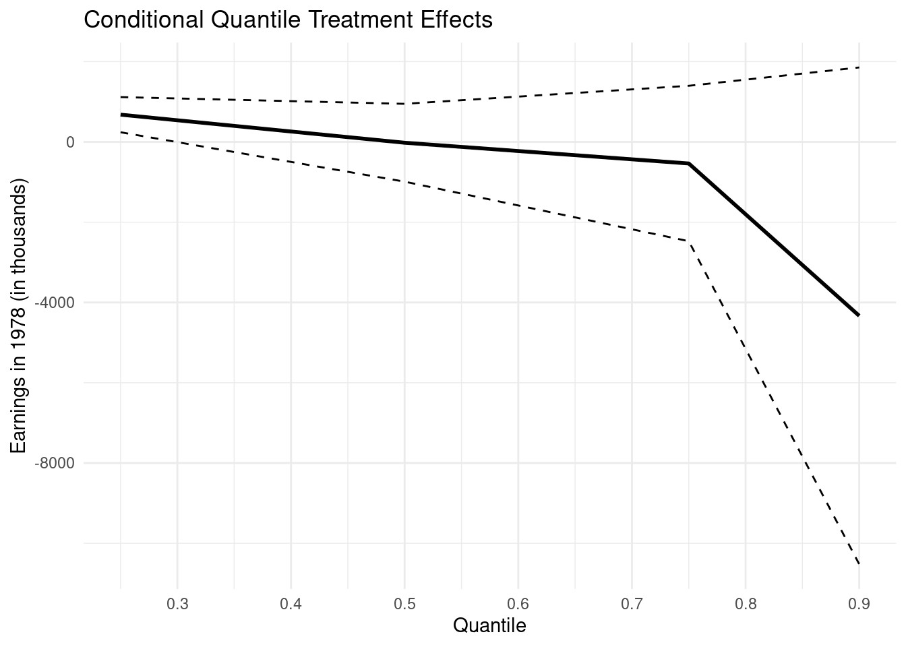
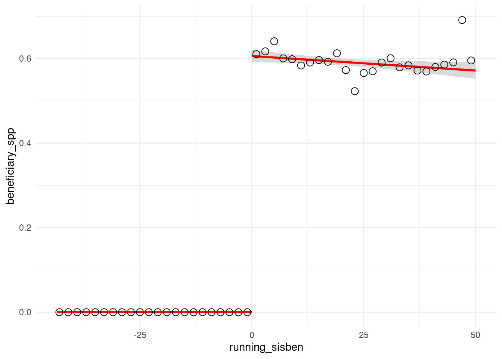
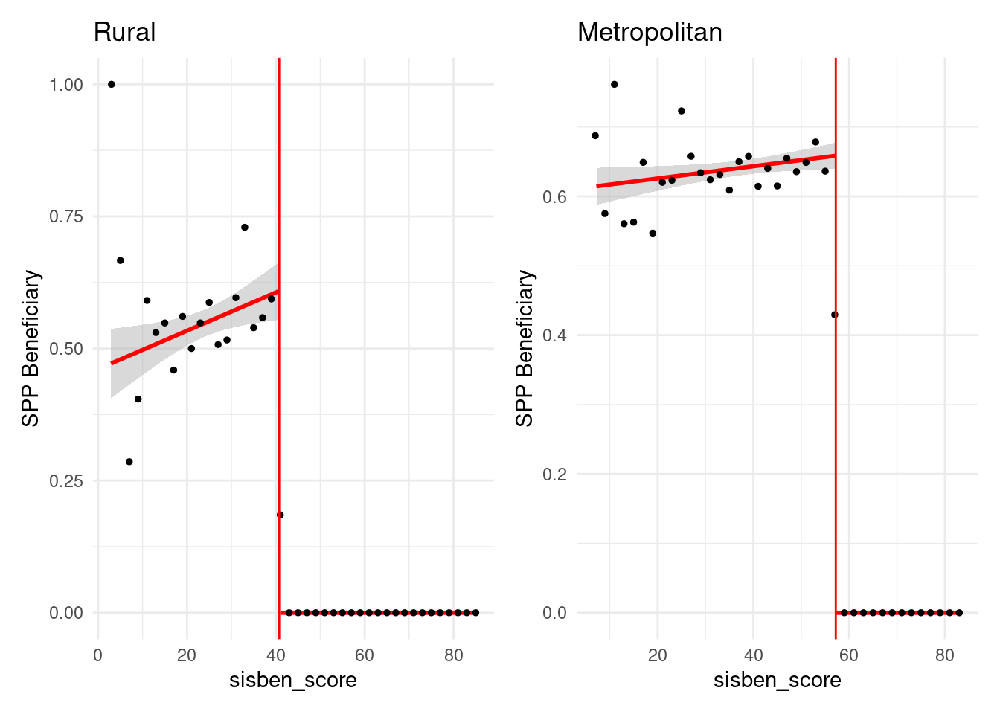
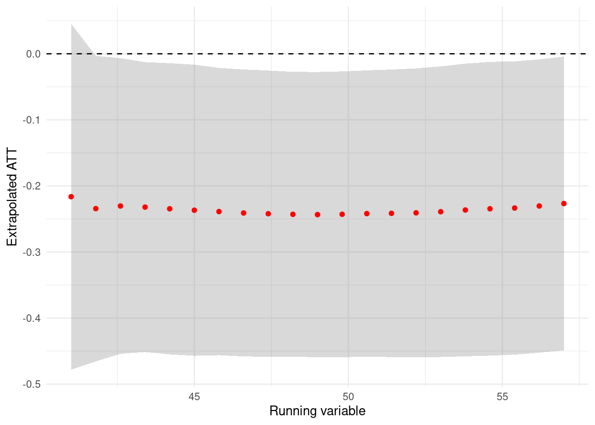
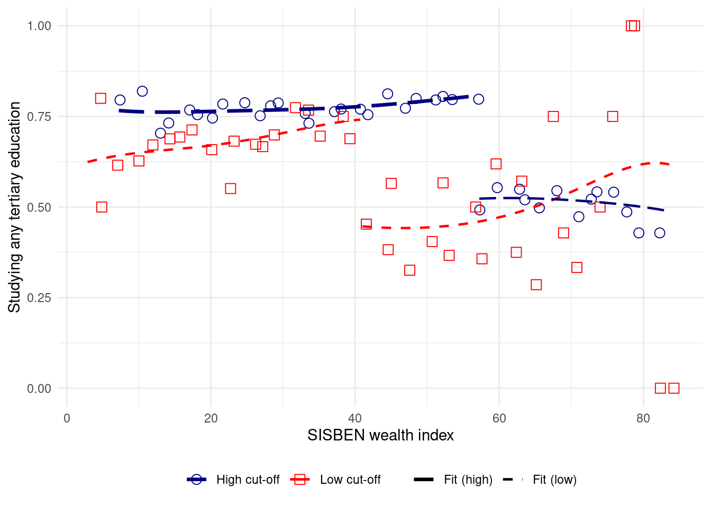

Code Call-out 8.1: Quantile Effects with an Exogenous Treatment
This Code Call Out is under construction.
In this code call-out we will explore some results documented in Firpo (2007), which require us to return once again to the LaLonde (1986) data we have discussed at length in Chapter 2. However, here rather than focussing on average treatment effects on the treated, we will focus on a range of quantile treatment effects (QTEs).
Estimating QTEs with Experimental Interventions
We will begin by exploring QTEs when treatment assignment is random, and does not require the incorporation of any controls. In these cases, at least for the estimates themselves, it is sufficient to simply directly calculate quantiles among the treated and control units. Let’s first load these data, and ensure that we know which our outcome and treatment variables are:
Min. 1st Qu. Median Mean 3rd Qu. Max.
0 5089 15962 14588 25565 60308
table(df$treat)
0 1
16252 185
df_sub <- df %>%filter(data_id =="Dehejia-Wahba Sample")ggplot(df_sub, aes(x = re78, color =as.factor(treat))) +geom_density(size =1.2) +scale_color_manual(values =c("red", "blue"),labels =c("Control", "Treated")) +labs(title ="Kernel Density of re78 by Treatment",x ="re78", color ="Group") +theme_minimal()

Now, with these data, let’s calculate some QTE. In particular, let’s calculate the quantity \(\tau_{QTE(0.8)}\), that is the effect at quantile 80. We can do this just by calculating the quantiles in each group:
Of course, we are not limited to doing this at the 80th quantile. We can inspect effects across the entire distribution by plotting cdfs for each group, and subtracting the control cdf from the treated cdf:
quantiles <-c(0.25, 0.5, 0.75)for (q in quantiles) { qt <-quantile(df$re78[df$treat ==1], q, na.rm =TRUE) qc <-quantile(df$re78[df$treat ==0], q, na.rm =TRUE)cat(sprintf("QTE at quantile %.2f = %.2f\n", q, qt - qc))}
QTE at quantile 0.25 = 485.23
QTE at quantile 0.50 = 1093.51
QTE at quantile 0.75 = 2354.58
library(ggplot2)df_treat <- df %>%filter(treat ==1) %>%arrange(re78)df_control <- df %>%filter(treat ==0) %>%arrange(re78)df_treat <- df_treat %>%mutate(cdf =ecdf(re78)(re78))df_control <- df_control %>%mutate(cdf =ecdf(re78)(re78))ggplot() +geom_line(data = df_treat, aes(x = re78, y = cdf), color ="blue", size =1) +geom_line(data = df_control, aes(x = re78, y = cdf), color ="red", linetype ="dashed", size =1) +labs(title ="Empirical CDFs of re78 by Treatment",x ="re78", y ="Cumulative Distribution") +theme_minimal()

ggsave("EmpiricalCDFs.png")
However, note that equivalently we can estimate these QTEs, along with their standard error, using quantile regression. Let’s confirm with ourselves that we can replicate the quantity \(\tau_{QTE(0.8)}\) by estimating a quantile regression.
library(quantreg)df <-read_dta("data/Dehejia_Wahba_2002.dta")df <- df %>%filter(data_id =="Dehejia-Wahba Sample")qreg_80 <-rq(re78 ~ treat, data = df, tau =0.8)summary(qreg_80)
Estimating QTEs and QTTs with non-Experimental Interventions
In cases where we instead believe that conditional unconfoundedness holds, there are two potential ways forward. To look at this, we will use the same LaLonde (1986) data, but now with the experimental treatment sample, and the non-experimental subsample as potential control units. We will control for the same factors we have discussed in code call-outs in Chapter 2. Let’s being by setting up these data:
A first, simpler, case exists if we are happy to report conditional QTEs. Let’s begin by exploring conditional QTEs which can be estimated by quantile regression with covariates:
ggplot(cqte_df, aes(x = quantile, y = qte)) +geom_line(color ="black", size =1) +geom_line(aes(y = qte_upper), linetype ="dashed", color ="black") +geom_line(aes(y = qte_lower), linetype ="dashed", color ="black") +labs(title ="Conditional Quantile Treatment Effects",x ="Quantile",y ="Earnings in 1978 (in thousands)") +scale_x_continuous(breaks =seq(0, 1, 0.1)) +theme_minimal()

ggsave("CQTE.png")
This can also be estimated using the user-written ivqte package of Frölich and Melly (2010), which similarly permits for heteroscedastic standard errors, and so forth.
Unconditional QTEs
Finally, let’s see how we can fully calculate unconditional QTEs and QTTs. Below, we implement Firpo (2007)’s methods and estimate both QTEs and QTTs. We do this using the ivqte package, which implements these weighting-based estimators, along with their standard errors:
Code Call-out 8.2: Extrapolating Regression Discontinuity Parameters Away from the Cut-off
This Code Call Out is under construction.
Londoño-Vélez, Rodríguez, and Fabio Sánchez (2020) study the impact of receiving financial aid for post-secondary education on rates of enrollment among low-income individuals in Colombia. Specifically, they take advantage of program eligibility rules based on cut-off scores in a wealth index to isolate effects of financial aid eligibility. These cut-off scores in the wealth index imply that for individuals whose family wealth index is below a specific explicitly designed score, they are eligible to receive financial aid provided that they meet test score requirements. However, comparable individuals with scores in the wealth index even marginally above this cut-off, are not eligible to receive financial aid.
While this suggests a standard regression discontinuity design, one novelty of these wealth cut-off scores is that they are not fixed nation-wide, but rather vary by location. For individuals living in rural areas, individuals with a score below 40.75 are eligible for financial aid, while in large metropolitan areas, this score is 57.21 (refer to Londoño-Vélez, Rodríguez, and Fabio Sánchez (2020), page 201 for full details). This suggests that we can extrapolate findings away from specific cut-offs to consider the generalisability of any treatment effect local to specific cut-off scores, following Cattaneo et al. (2021).
Confirming Discontinuities in Treatment Eligibility
To see the broad context of the study, we will begin by confirming that there is a discontinuity in financial aid eligibility rates around the test score cut-off. We begin by opening the data from Londoño-Vélez, Rodríguez, and Fabio Sánchez (2020) and working with the sample they use in the paper. Specifically here, we will also impose the restriction eligible_saber11==1 which implies that all individuals in the sample meet educational criteria for financial aid, and so the only discontinuity which exists is that owing to the wealth eligibility criteria:
library(haven)library(dplyr)# Load datadata <-read_dta("data/LondonoVelez_et_al_2020.dta")data <- data %>%filter(icfes_per ==20142, eligible_saber11 ==1)
Now let’s visualise the discontinuity in eligibility in the entire sample. Here we will work with a re-centred running variable which for each individual defines their distance to the area-specific eligigility threshold which applied to them. In order to set up a simple visualisation we will use an arbitrary definition setting bins from 50 points below the threshold up to 50 points above the threshold, in increments of 2 points. For a discussion of optimal bins in this setting refer to the discussion in Chapter 6 of the book. Within each bin, we will generate average scores as bin, and will plot a single point for each average score. We will then overlay a linear fit on either side of the cut-off using the original data.
library(dplyr)library(ggplot2)# Create bins with explicit midpointsbin_width <-2data <- data %>%filter(abs(running_sisben) <50) %>%mutate(cut =cut(running_sisben, breaks =seq(-50, 50, by = bin_width), include.lowest =TRUE))bin_means <- data %>%group_by(cut) %>%summarise(bin =mean(beneficiary_spp, na.rm =TRUE), .groups ="drop") %>%mutate(midpoint = (as.numeric(sub("\\((.+),.*", "\\1", cut)) +as.numeric(sub("[^,]*,([^]]*)\\]", "\\1", cut))) /2)# Plotggplot(data, aes(x = running_sisben, y = beneficiary_spp)) +geom_smooth(data =filter(data, running_sisben <0),method ="lm", se =TRUE, color ="red", fill ="grey70", alpha =0.5 ) +geom_smooth(data =filter(data, running_sisben >=0),method ="lm", se =TRUE, color ="red", fill ="grey70", alpha =0.5 ) +geom_point(data = bin_means,aes(x = midpoint, y = bin),color ="black", size =3, shape =1 ) +labs(x ="running_sisben", y ="beneficiary_spp") +scale_y_continuous(labels = scales::label_number(format ="%03.1f")) +theme_minimal() +theme(legend.position ="bottom")

Above we see clear evidence of a sharp increase in eligibility when individuals fall just below the cut-off point. While no one with an above cut-off score is found to be eligible, this immediately jumps to around 60% eligibility among those with a below cut-off score. In what remains of the code call out below we will focus on the impact of falling below this cut-off, rather than the eligibility criteria itself. In effect, we wil consider a sharp design rather than a fuzzy design, though note that discussion in Cattaneo et al. (2021) points to how we could generalise this for a fuzzy design.
Visualising Multiple Treatment Cut-offs
Before we consider the process of extrapolating across cut-offs, let’s begin by confirming that we do indeed see multiple cut-offs owing to the differential treatment thresholds. We do this below, using the sisben_area variable, which takes 1 for large metropolitan areas which have a cut-off of 57.21 points, and 3 for rural areas with a cut-off of 40.75 points. There is actually also a third group (other urban areas) which takes a value of 2 and has a cut-off of 56.32 points, but because this is very close to group 1, we will only focus on rural and metropolitan areas.
We will generate two graphs, simply seeking to confirm that we see a sharp cut-off for each group at the point where, theoretically, such a cut-off should appear. We will do this with the precise score on the wealth index (sisben_score).
library(patchwork)# Low cut-off (Rural)data_low <- data %>%filter(sisben_area ==3) %>%mutate(cut_low =cut(sisben_score, breaks =seq(0, 100, 2), include.lowest =TRUE))bin_low <- data_low %>%group_by(cut_low) %>%summarise(bin_low =mean(beneficiary_spp, na.rm =TRUE), .groups ="drop") %>%mutate(midpoint = (as.numeric(sub("\\((.+),.*", "\\1", cut_low)) +as.numeric(sub("[^,]*,([^]]*)\\]", "\\1", cut_low))) /2)p_low <-ggplot(data_low, aes(x = sisben_score, y = beneficiary_spp)) +geom_smooth(data =subset(data_low, sisben_score <40.75),method ="lm", se =TRUE, color ="red", fill ="grey70", alpha =0.5) +geom_smooth(data =subset(data_low, sisben_score >=40.75),method ="lm", se =TRUE, color ="red", fill ="grey70", alpha =0.5) +geom_point(data = bin_low, aes(x = midpoint, y = bin_low),color ="black", size =1) +labs(title ="Rural", y ="SPP Beneficiary", x ="sisben_score") +scale_y_continuous(labels = scales::label_number(format ="%04.2f")) +geom_vline(xintercept =40.75, color ="red") +theme_minimal() +theme(legend.position ="none")# High cut-off (Metropolitan)data_high <- data %>%filter(sisben_area ==1) %>%mutate(cut_high =cut(sisben_score, breaks =seq(0, 100, 2), include.lowest =TRUE))bin_high <- data_high %>%group_by(cut_high) %>%summarise(bin_high =mean(beneficiary_spp, na.rm =TRUE), .groups ="drop") %>%mutate(midpoint = (as.numeric(sub("\\((.+),.*", "\\1", cut_high)) +as.numeric(sub("[^,]*,([^]]*)\\]", "\\1", cut_high))) /2)p_high <-ggplot(data_high, aes(x = sisben_score, y = beneficiary_spp)) +geom_smooth(data =subset(data_high, sisben_score <57.21),method ="lm", se =TRUE, color ="red", fill ="grey70", alpha =0.5) +geom_smooth(data =subset(data_high, sisben_score >=57.21),method ="lm", se =TRUE, color ="red", fill ="grey70", alpha =0.5) +geom_point(data = bin_high, aes(x = midpoint, y = bin_high),color ="black", size =1) +labs(title ="Metropolitan", y ="SPP Beneficiary", x ="sisben_score") +scale_y_continuous(labels = scales::label_number(format ="%04.2f")) +geom_vline(xintercept =57.21, color ="red") +theme_minimal() +theme(legend.position ="none")# Combinep_low + p_high

These graphs above are really only used to show descriptive patters, as we have built bins in average of 2 points, and so the final bin on the right hand side will be slightly contaminated with above-threshold points, but we can correct this by generating different cut-points easily enough, and the graphs above make clear that there are clear discontinuities at the points which correspond to the specific wealth cut-off corresponding to each group.
Let’s now consider some outcome of interest, and the extrapolation of treatment effects which we seek to achieve. In particular, let’s work with the variable spadies_any which indicates whether an individual studies any type of post-secondary education. And let’s visualise the mean outcome and a local polynomial fit of the outcomes for each group. Below we do this in a single graph. To do so we generate two variables which we can use to generate means, which we arbitrarily set in terms of 2 point bins. We then use egen ... mean() to generate mean scores in each of these groups simultaneously, before plotting these means as well as local polynomial fits on each side. Note that we generate group means without collapsing so that we can generate local polynomial fits based on the original microdata, rather than collapsed means.
In the above plot we can quite easily see the idea of what we wish to do when extrapolating treatment effects away from the cut-off. Specifically, we wish to consider the first cut-off, here at 40.75 points. We wish to calculate the treatment effect at this cut-off by comparing outcomes among exposed units just at the left to those just at the right in the spirit of an RDD. And then we wish to consider what the treatment effect would look like at specific points above 40.75 if we use the trend among units exposed at a higher cut-off point (those with blue circles) to extrapolate means in the below-cut-off group with red squares, before finally comparing extrapolated means with actual observed rates among those with red squares to the right of the treatment cut-off.
Extrapolating Treatment Effects Away from the Cut-off
In order to do such an extrapolation, we require a way to estimate local polynomial fits at various points (including at end-points just before treatment cut-offs), as well as the variance of these local polynomial estimates. Fortunately, in relation to the work of Cattaneo et al. (2021), the authors developed software for such local polynomial fits, incorporating elements such as robust bias correction. This is avaialable (in Stata and R) as nprobust and we will work with this package below to estimate the required quantities.
Let’s begin by imagining that we wish to extrapolate treatment effects from the true cut-off of 40.75 up a higher point on the SISBEN wealth index (50 points). To do so, we need four quantities. Firstly, we need to calculate the end point of the low-cut-off group precisely at 40.75 points (ie the point just before the discontinuity kicks in). Cattaneo et al. (2021) call this first quantity \(\mu_{0,\ell}(\ell)\) Secondly, we need to calculate the mean values in the high-cut-off group at both 40.75 and 50 points, which allows us to calcualte any trend over this range. Cattaneo et al. (2021) refer to these as \(\mu_{0,h}(\ell)\) and \(\mu_{0,h}(\bar{x})\) respectively. And finally, we wish to calculate the mean among low-cut-off group outcomes at 50 points, which Cattaneo et al. (2021) refer to as \(\mu_{1,\ell}(\bar{x})\). Once we have these points in hand, as discussed in Section 8.4.2.2 of the book, we can simply extrapolate our treatment effect as: \[
\widehat\tau_\ell(\bar{x})=\widehat\mu_{1,\ell}(\bar{x}) -[\widehat\mu_{0,h}(\bar{x})+\widehat\mu_{0,\ell}(\ell)-\widehat\mu_{0,h}(\ell)].
\]
Let’s do this below, using `lprobust’ to generate key quantities. We will also take the variance at each point, allowing us to calculate the standard error of the extrapolated treatment effect as the square root of the total variance.
While this is a single extrapolation, we can of course extrapolate more widely up to any point below the second cut-off, at which no untreated units remain. Below we conduct a similar process now extrapolating across a range of values. This simply replicates the code above, but incorporating a loop for various values \(\bar{x}\) used to extrapolate.
# Plotggplot(results, aes(x = runvar, y = estimate)) +geom_ribbon(aes(ymin = LB, ymax = UB), fill ="grey50", alpha =0.3) +geom_point(color ="red") +labs(y ="Extrapolated ATT", x ="Running variable") +scale_y_continuous(labels = scales::label_number(format ="%03.1f")) +geom_hline(yintercept =0, linetype ="dashed", color ="black") +theme_minimal() +theme(legend.position ="bottom")

We can see what the extrapolated effects look like across a range of values, presenting these estimates along with 95% confidence intervals. In this specific case we note that extrapolated effects are quite flat, which makes sense given that both relevant non-parametric fits (shown in Figure Figure 1) in the relevant range between 40 and 57 are quite flat.
Code Call-out 8.3: Marginal Treatment Effects
This Code Call Out is under construction.
To understand the estimation of Marginal Treatment Effect (MTE) we will be based on the study of Carneiro, Lokshin, and Umapathi (2017), which examines the returns to upper secondary schooling and how these returns vary across individuals with different likelihoods of enrolling.
The authors analysis relies on a subsample from the 2000 wave of the Indonesia Family Life Survey (IFLS). This subsample focus on men aged 25–60 who are employed and report non-missing information on wages and schooling. The resulting sample consists of 2,608 working-age males. Similarly, they classify schooling into two groups: completed lower secondary or less, and attended upper secondary or higher.
The control variables include age dummies, parental education indicators (including a category for missing values), an indicator for living in a village at age 12, province fixed effects, a rural residence indicator, and the distance from the community head’s office to the nearest health post. The instrument for schooling is the distance from the community head’s office to the closest secondary school.
We begin by loading the dataset and constructing the data_sample. For this, we define the set of covariates used in the outcome equation X, drop observations with missing values in the outcome, regressors, and selection variables.
We now estimate the propensity score using a logit model where the binary treatment indicator dschool is regressed on the full set of covariates included in the selection equation. Specifically, the specification includes the distance to the nearest secondary school (kmsmp), all interaction terms of covariates with the instrument (INT_*), and the baseline set of individual and household characteristics contained in the vector X (age and age squared, parental education indicators, religious affiliation, rural status, distance to the closest health post, and province fixed effects).
form_ps <-as.formula(paste("dschool ~", paste(c("kmsmp", INT_vars, X), collapse =" + ")))logit_ps <-glm(form_ps, data = data_sample, family =binomial(link ="logit"))data_sample$ps_manual <-predict(logit_ps, type ="response")
Because the MTE can only be identified over the support of P, it is necessary to inspect the distribution of P. The following figure presents the predicted propensity score distributions for those who attend upper secondary school and those who do not.
psvar <-"ps_manual"library(dplyr)library(ggplot2)library(patchwork)p0 <- data_sample %>%filter(dschool ==0, !is.na(.data[[psvar]])) %>%ggplot(aes(x = .data[[psvar]], y =after_stat(..count..) /sum(..count..))) +geom_histogram(bins =30, fill ="skyblue3", color ="black") +labs(x ="less than upper secondary", y ="") +scale_y_continuous(limits =c(0, 0.10)) +scale_x_continuous(breaks =seq(0, 1, 0.2))p1 <- data_sample %>%filter(dschool ==1, !is.na(.data[[psvar]])) %>%ggplot(aes(x = .data[[psvar]], y =after_stat(..count..) /sum(..count..))) +geom_histogram(bins =30, fill ="skyblue3", color ="black") +labs(x ="upper secondary", y ="") +scale_y_continuous(limits =c(0, 0.10)) +scale_x_continuous(breaks =seq(0, 1, 0.2))p0 | p1

To further assess the support conditions, it is useful to examine not only the overall distribution of the propensity score, but also how this distribution varies across individuals with different observable characteristics.
“If all we are willing to assume is that (\(U_0\), \(U_1\),V) is independent of Z given X, then it is only possible to estimate the MTE over the support of P conditional on X. Figure 2 plots f(P|X), the density of P given X.” (AERHeckman, 2011)
We begin by constructing the gain index \(X(\delta_1 - \delta_0)\). To do this, we estimate separate outcome equations for individuals with and without upper secondary schooling, obtain the coefficient vectors \(\hat{\delta}_1\) and \(\hat{\delta}_0\), and take their difference. Multiplying this difference by each individual’s covariates yields the index \(X(\hat{\delta}_1 - \hat{\delta}_0)\), which summarizes the observable component of the return to schooling.
First, we estimate a smooth joint density \(f(X, P)\) using kde2d. Then, for each value of \(X\) (each row of the matrix), we normalize the density values over \(P\) so that they represent the conditional density of \(P\) given \(X\), i.e. \(f(P \mid X)\).
library(plotly)fig <-plot_ly(x = kde$x, y = kde$y, z =~t(z_cond), #type ="surface") %>%layout(title ="Support of P conditional on X index",scene =list(xaxis =list(title ="X(δ1 - δ0) index"),yaxis =list(title ="P (propensity score)"),zaxis =list(title ="f(P | X)") ) )fig
Thus, we construct the region of common support by computing the maximum of the minimum propensity scores and the minimum of the maximum propensity scores across treated and untreated individuals. Observations with propensity scores outside this interval are excluded from the analysis.
A simple way to approximate MTE is through a parametric approach, specifically assuming 𝐸[𝑌∣𝑃] is cubic polynomial in \(P\). Then the MTE is the derivative of that polynomial with respect to𝑃.
Figure X plots the MTE as a function of the propensity score. The MTE measures the marginal return to upper secondary schooling for individuals with a given probability of enrolling. The figure reveals individuals with a higher propensity to attend upper secondary school tend to experience higher marginal returns, while individuals with a lower propensity exhibit lower returns.
“The fact that returns are the lowest for individuals who are least likely to go to school is consistent with a simple economic model where agents sort into different levels of schooling based on their comparative advantage.”
In contrast with the parametric approach we can estimate𝐸[𝑌∣𝑃] flexibly and compute the MTE as its local slope. We use np to run a local linear regression and request the gradient (derivative) with respect to \(P\). Consistent with parametric approach, the positive slope of the nonparametric MTE suggests positive selection on gains: individuals who are more likely to attend upper secondary schooling benefit more from treatment than those who are less likely to enroll.
# Treatment indicator D <-as.numeric(data_sample$dschool)# Propensity scoreps <-as.numeric(data_sample$ps_manual)# Trim to avoid infinitieseps <-1e-6ps <-pmin(pmax(ps, eps), 1- eps)# Inverse Mills ratioslambda1 <-dnorm(qnorm(ps)) / pslambda0 <--dnorm(qnorm(ps)) / (1- ps)Y.switch <-lm( learnhr00 ~ D + D:lambda1 + (1- D):lambda0,data = data_sample)# Grid of v valuesv_grid <-seq(0.01, 0.99, length.out =200)# Coefficientsb <-coef(Y.switch)delta_beta <- b["D"]delta_rho <- b["D:lambda1"] - b["(1 - D):lambda0"]# Parametric MTEmte_par <- delta_beta + delta_rho *qnorm(v_grid)df_mte_par <-data.frame(v = v_grid,mte = mte_par)ggplot(df_mte_par, aes(x = v, y = mte)) +geom_line(size =1) +labs(x ="V (unobserved resistance to treatment)",y ="MTE",title ="Parametric MTE (Switching Model with Inverse Mills Ratios)" ) +theme_minimal(base_size =13) +theme(plot.title =element_text(hjust =0.5, face ="bold") )
As we discussed in the section 8.5.2.3 the MTE is a “building block” because it can be linked to many other treatment effects including the ATT, the ATE, the ATU, the LATE, among others.
Specifically, these other treatment effects are (weighted) averages of the MTE at specific points of UD. For example, we can simply enough write the ATE for a specific covariate group as the average of all MTEs:
Similarly, we can view the ATT and ATU as weighted averages of MTEs, where weights refer to the likelihood of being treated or untreated at each point UD:
uD <-qnorm(ps) ### inverse of CDFP.probit <-glm(data_sample$dschool ~ uD, family =binomial(link ="probit"))p_hat <-as.numeric(predict(P.probit, type ="response"))omega_ATT <- (1- p_hat) /mean(1- p_hat)omega_ATU <- (p_hat) /mean(p_hat)ATT <-mean(omega_ATT * mte, na.rm =TRUE)ATU <-mean(omega_ATU * mte, na.rm =TRUE)effects <-rbind(c("Parameter", "ATE", "ATT", "ATU"),c("Estimate", round(ATE,3), round(ATT,3), round(ATU,3)))effects
Cattaneo, Matias D., Luke Keele, Rocío Titiunik, and Gonzalo Vazquez-Bare. 2021. “Extrapolating Treatment Effects in Multi-Cutoff Regression Discontinuity Designs.”Journal of the American Statistical Association 116 (536): 1941–52.
Frölich, Markus, and Blaise Melly. 2010. “Estimation of Quantile Treatment Effects with Stata.”The Stata Journal 10 (3): 423–57.
LaLonde, Robert J. 1986. “Evaluating the Econometric Evaluations of Training Programs with Experimental Data.”The American Economic Review 76 (4): 604–20.
Londoño-Vélez, Juliana, Catherine Rodríguez, and and Fabio Sánchez. 2020. “Upstream and Downstream Impacts of College Merit-Based Financial Aid for Low-Income Students: Ser Pilo Paga in Colombia.”American Economic Journal: Economic Policy 12 (2): 193–227.